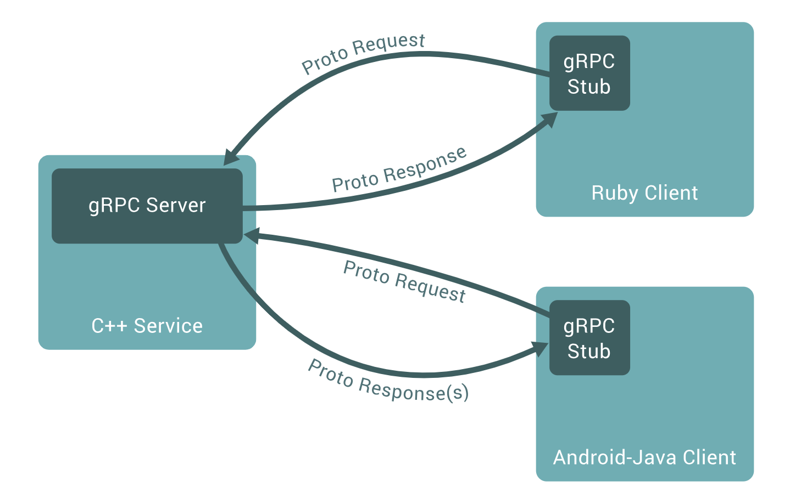

grpc 官网https://grpc.io
grpc 是一个高效的，开源的，统一的rpc框架
grpc 的基本特点是：
- 简单的服务定义：可以使用protocol buffers来定义你的服务，protocol buffers本身是一个强大的，二进制序列化工具集和语言
- 可以跨越语言和平台：可以为你的服务自动的生成习惯使用的客户端和服务端的stubs语言和平台
- 快速启动或扩展：通过一个简单的命令安装到开发环境或运行是环境并扩展为百万级别的rpc框架
- 双向的流并集成授权：基于http 2传输的二进制双向流并完全集成可插拔的身份验证
1. what is grpc
这个文档介绍了grpc和protocol buffers，grpc可以使用protocol buffers即作为它的IDL(接口描述语言，接口定义语言)，可以使用它作为它底层的消息交换格式，如果你是一个不了解grpc或protocol buffers的就继续往下读
1.1. Overview
在Grpc客户端应用中可以调用各机器上各服务上的各方法，就好像是一个本地对象一样，这使的你可以创建分布式应用与服务。就像很多RPC系统一样，gRPC是基于这样一个想法，定义一个服务，指定好可以远程调用的方法，同时带上参数和返回值，在服务器端，实现接口，然后运行一个gRPC服务器来处理客户端的调用。另外在客户端有一个stub(在某些语言中也叫client)，它提供了可服务器相同的方法

gRPC 客户端和服务端可以在多种环境中运行和交互 - 从 google 内部的服务器到你自己的桌面，并且可以用任何 gRPC 支持的语言来编写。所以，你可以很容易地用 Java 创建一个 gRPC 服务端，用 Go、Python、Ruby 来创建客户端。此外，Google 最新 API 将有 gRPC 版本的接口，使你很容易地将 Google 的功能集成到你的应用里。
1.2. Working with Protocol Buffers
gRPC 默认使用 protocol buffers，这是 Google 开源的一套成熟的结构数据序列化机制（当然也可以使用其他数据格式如 JSON）。正如你将在下方例子里所看到的，你用 proto files 创建 gRPC 服务，用 protocol buffers 消息类型来定义方法参数和返回类型。你可以在 Protocol Buffers 文档找到更多关于 Protocol Buffers 的资料。
1.2.1 Protocol buffer versions
虽然Protocol buffer对用户已经开源了一段时间了，但是他们的实例使用的Proto3，它提供了稍微简介的语法，新的特效，并支持更多的语言，目前可以使用到Java, C++, Python, Objective-C, C#, a lite-runtime (Android Java), Ruby, and JavaScript，Go 或更多的语言开发。您可以在proto3语言指南和每种语言的参考文档中找到更多信息。参考文档还包括.proto文件格式的正式规范。
一般来说你可以使用proto2(当前Protocol buffer默认版本号)，在使用gRPC中我们建议你使用Proto3，以便于支持更多的功能和特效，以便于出现如下错误，一端使用的Proto2，一边使用的Proto3，版本不一样出现一下兼容性问题，
2. gRPC Concepts
本文档通过对于 gRPC 的架构和 RPC 生命周期的概览来介绍 gRPC 的主要概念。本文是在假设你已经读过文档部分的前提下展开的。针对具体语言细节请查看对应语言的快速开始、教程和参考文档（很快就会有完整的文档）。
2.1 Overview
2.1.2 Service definition
与许多RPC系统一样，gRPC基于定义服务的思想，指定可以使用的参数和返回类型远程调用的方法，默认情况下，gRPC使用Protocol buffer作为接口定义语言（IDL）来描述服务接口和有效负载消息的结构。如果需要，可以使用其他替代方案。
1 | service HelloService { |
gRPC可以让我们定义四种方法
- 客户端向服务器发送单个请求并返回单个响应，就像正常的函数调用一样。
1 | rpc SayHello(HelloRequest) returns (HelloResponse){ |
- 服务端流式 RPC，即客户端发送一个请求给服务端，可获取一个数据流用来读取一系列消息。客户端从返回的数据流里一直读取直到没有更多消息为止。
1 | rpc LotsOfReplies(HelloRequest) returns (stream HelloResponse){ |
- 客户端流式 RPC，即客户端用提供的一个数据流写入并发送一系列消息给服务端。一旦客户端完成消息写入，就等待服务端读取这些消息并返回应答。
1 | rpc LotsOfGreetings(stream HelloRequest) returns (HelloResponse) { |
- 双向流式 RPC，即两边都可以分别通过一个读写数据流来发送一系列消息。这两个数据流操作是相互独立的，所以客户端和服务端能按其希望的任意顺序读写，例如：服务端可以在写应答前等待所有的客户端消息，或者它可以先读一个消息再写一个消息，或者是读写相结合的其他方式。每个数据流里消息的顺序会被保持。
1 | rpc BidiHello(stream HelloRequest) returns (stream HelloResponse){ |
我们将在下面的RPC生命周期部分中更详细地介绍不同类型的RPC。
2.1.3 Using the API surface
gRPC 提供 protocol buffer 编译插件，能够从一个服务定义的 .proto 文件生成客户端和服务端代码。通常 gRPC 用户可以在服务端实现这些API，并从客户端调用它们。
- 在服务侧，服务端实现服务接口，运行一个 gRPC 服务器来处理客户端调用。gRPC 底层架构会解码传入的请求，执行服务方法，编码服务应答。
- 在客户侧，客户端有一个stub实现了服务端同样的方法。客户端可以在本地stub调用这些方法，用合适的 protocol buffer 消息类型封装这些参数— gRPC 来负责发送请求给服务端并返回服务端 protocol buffer 响应。
2.1.4 Synchronous vs. asynchronous
同步 RPC 调用一直会阻塞直到从服务端获得一个应答，这与 RPC 希望的抽象最为接近。另一方面网络内部是异步的，并且在许多场景下能够在不阻塞当前线程的情况下启动 RPC 是非常有用的。
在多数语言里，gRPC 编程接口同时支持同步和异步的特点。你可以从每个语言教程和参考文档里找到更多内容(很快就会有完整文档)。
2.2. RPC life cycle
现在让我们来仔细了解一下当 gRPC 客户端调用 gRPC 服务端的方法时到底发生了什么。我们不究其实现细节，关于实现细节的部分，你可以在我们的特定语言页面里找到更为详尽的内容。
2.2.1 单项 RPC
首先我们来了解一下最简单的 RPC 形式：客户端发出单个请求，获得单个响应。
- 一旦客户端通过stub/client调用一个方法，服务端会得到相关通知 ，通知包括客户端的元数据，方法名，允许的响应期限（如果可以的话）
- 服务端既可以在任何响应之前直接发送回初始的元数据，也可以等待客户端的请求信息，到底哪个先发生，取决于具体的应用。
- 一旦服务端获得客户端的请求信息，就会做所需的任何工作来创建或组装对应的响应。如果成功的话，这个响应会和包含状态码以及可选的状态信息等状态明细及可选的追踪信息返回给客户端 。
- 假如状态是 OK 的话，客户端会得到应答，这将结束客户端的调用。
2.2.2 Server streaming RPC
服务端流式 RPC 除了在得到客户端请求信息后发送回一个应答流之外，与我们的简单例子一样。在发送完所有应答后，服务端的状态详情(状态码和可选的状态信息)和可选的跟踪元数据被发送回客户端，以此来完成服务端的工作。客户端在接收到所有服务端的应答后也完成了工作。
2.2.3 Client streaming RPC
客户端流式 RPC 也基本与我们的简单例子一样，区别在于客户端通过发送一个请求流给服务端，取代了原先发送的单个请求。服务端通常（但并不必须）会在接收到客户端所有的请求后发送回一个应答，其中附带有它的状态详情和可选的跟踪数据。
2.2.4 Bidirectional streaming RPC
双向流式 RPC ，调用由客户端调用方法来初始化，而服务端则接收到客户端的元数据，方法名和截止时间。服务端可以选择发送回它的初始元数据或等待客户端发送请求。
下一步怎样发展取决于应用，因为客户端和服务端能在任意顺序上读写 - 这些流的操作是完全独立的。例如服务端可以一直等直到它接收到所有客户端的消息才写应答，或者服务端和客户端可以像”乒乓球”一样：服务端后得到一个请求就回送一个应答，接着客户端根据应答来发送另一个请求，以此类推。
2.2.5 Deadlines/Timeouts
gRPC 允许客户端在调用一个远程方法前指定一个最后期限值。这个值指定了在客户端可以等待服务端多长时间来应答，超过这个时间值 RPC 将结束并返回DEADLINE_EXCEEDED错误。在服务端可以查询这个期限值来看是否一个特定的方法已经过期，或者还剩多长时间来完成这个方法。
各语言来指定一个截止时间的方式是不同的 - 比如在 Python 里一个截止时间值总是必须的，但并不是所有语言都有一个默认的截止时间。
2.2.6. RPC termination
在 gRPC 里，客户端和服务端对调用成功的判断是独立的、本地的，他们的结论可能不一致。这意味着，比如你有一个 RPC 在服务端成功结束(“我已经返回了所有应答!”)，到那时在客户端可能是失败的(“应答在最后期限后才来到!”)。也可能在客户端把所有请求发送完前，服务端却判断调用已经完成了。
2.2.7. Cancelling RPCs
无论客户端还是服务端均可以再任何时间取消一个 RPC 。一个取消会立即终止 RPC 这样可以避免更多操作被执行。它不是一个”撤销”， 在取消前已经完成的不会被回滚。当然，通过同步调用的 RPC 不能被取消，因为直到 RPC 结束前，程序控制权还没有交还给应用。
2.2.8. Metadata
元数据是一个特殊 RPC 调用对应的信息(授权详情) ，这些信息以键值对的形式存在，一般键的类型是字符串，值的类型一般也是字符串(当然也可以是二进制数据)。元数据对 gRPC 本事来说是不透明的 - 它让客户端提供调用相关的信息给服务端，反之亦然。
对于元数据的访问是语言相关的。
2.2.9 Channels
在创建客户端stub时，一个 gRPC Channel提供一个特定主机和端口服务端的连接。客户端可以通过指定Channel参数来修改 gRPC 的默认行为，比如打开关闭消息压缩。一个Channel具有状态，包含已连接和空闲 。
gRPC 如何处理关闭Channel是语言相关的。有些语言可允许询问Channel状态。
3. Authentication
本文档概述了gRPC身份验证，包括我们内置的支持身份验证机制，如何插入您自己的身份验证系统，以及如何在我们支持的语言中使用gRPC身份验证的示例。
3.1. Overview
gRPC旨在与各种身份验证机制配合使用，可以轻松安全地使用gRPC与其他系统进行通信。您可以使用我们支持的机制 - 带或不带基于Google令牌的身份验证的SSL / TLS - 或者您可以通过扩展我们提供的代码来插入您自己的身份验证系统。
gRPC还提供了一个简单的身份验证API，允许您在创建channel或方法调用时提供所有必要的身份验证信息作为凭据。
3.2. Supported auth mechanisms
gRPC内置了以下身份验证机制：
- SSL/TLS: gRP 集成 SSL/TLS 并对服务端授权所使用的 SSL/TLS 进行了改良，对客户端和服务端交换的所有数据进行了加密。对客户端来讲提供了可选的机制提供凭证来获得共同的授权。
- Token-based authentication with Google: